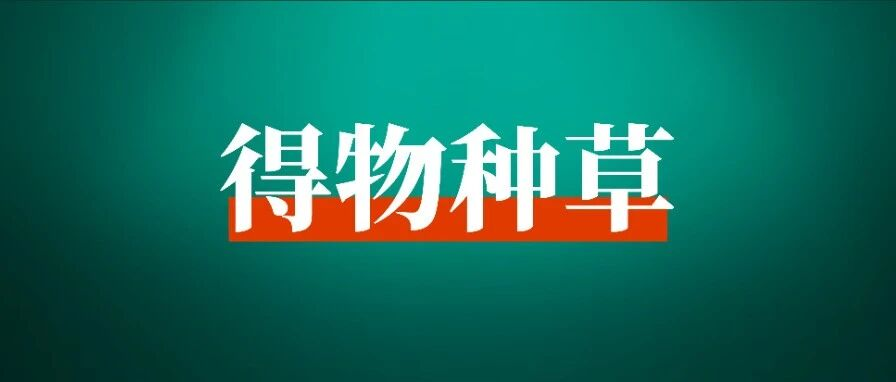

0粉也能迅速变现，我发现了适合普通人长期做的副业项目
👆点击生财有术>点击右上角“···”>设为星标🌟
当下各大平台流量竞争激烈，还有适合普通人长期做、低门槛的副业项目吗？
圈友 @韩北樱 在五个月时间里，通过得物好物种草项目实现月收入2000+。
“0粉就可获得种草赏金和视频激励。不需要特别专业，更多的是站在已买人的角度。” 如果你想利用日常零碎时间或者周末做副业，不妨试试这个项目。

大家好，我是北樱，今天和大家分享一个小众的副业项目：得物好物种草变现。
我利用空余时间做得物已经五个月了，收入1w+，其中产品价值9000+、佣金3000+，随着拍照和文案水平的提升，收入也会逐月增加。
今天分享的是我做得物的复盘，以及摸索出来的经验。对于平时空余时间多，想要做小而美副业的圈友，是个不错的选择。
Part 1
为什么选得物
对于普通人来说，得物有两大优势。
1、门槛低：0粉就可获得种草赏金和视频激励，账号14天内发布的内容，其中12篇阅读量≥500就能开通品牌合作；
2、难度小：不需要特别专业，更多的是站在已买人的角度，来分享自己的产品使用体验。
这点可以对比小红书，同一产品，得物种草会比小红书种草要求低很多，更适合普通人去做。
比如一款含氟牙膏好物种草：

像小红书这种比较专业的，纯从产品角度去推荐的，是不被得物平台所鼓励的，品牌合作也过不了。
由此可见得物的好物种草真的非常简单。

那么得物适合哪些人群去做呢？
大学生、宝妈、平时不经常加班的打工人都可以。
一个合作，是4-8张图+300字以内的文案，会拍图了半个小时就可以完成一个合作。
利用空余时间做得物完全没问题，每天投入1-2小时，长期下来也是一笔不小的收入！
我做自媒体已经有4年，做过不同平台的博主、运营过社群、也做知识付费。
总结下来，新媒体的变现路径不外乎这三种：
❖
赚老板的钱：利用掌握的新媒体知识，找一份与之相关的全职或兼职；
❖
赚商家的钱：做自媒体博主，比如小红书博主、得物博主。本质是给商家的产品做推广；
❖
赚用户的钱：解决用户的问题、满足用户的需求，从而用户为之付费，形成自己的个人品牌。
对于这三种变现方式，也各有利弊。
❖
工作变现：启动速度最快，但赚钱增速慢，长期成功率最短，短期成功率最大；
❖
个人品牌变现：启动速度相对快，赚钱增速快，长期成功率大，短期成功率中等；
❖
博主变现：启动速度慢，赚钱增速快，长期成功率最大，但短期成功率也最低。
像得物，就属于博主变现。跟做得物博主的朋友交流中总结下来，发现运营时间越长，接到的商单也就越发优质。
像这个是做了1年左右的，定向合作很多，也有不少品牌方定期复投。

最近我的账号流量做起来，后台的佣金也从千篇一律的20，开始逐步提高，还有不少品牌方直接下定向。


（向右滑动以查看）
Part 2
得物博主是如何赚钱的？
要知道得物是如何赚钱的，首先了解什么是好物种草。
每个商品下都会有开箱精选，达人发布的好物种草/开箱视频，带商品链接就会出现在开箱精选里，以分享真实感受为主，帮助用户全方位的了解产品，辅助用户决策进行下单。
比如DW粉底液：


（向右滑动以查看）
①品牌合作
这是得物好物变现项目最主要的收益方式。
投稿佣金20-100元不等，定向佣金100起步。可以利用零碎时间做，账号升级到LV.2及以上不限制接单次数，有时间精力就可以多接一些商单。
变现周期较长，但做起来后变现稳定（至少37天左右），随着粉丝量和阅读量的提升，定向商单量和报价都会随之升高，这时收益稳定每月1w+没问题。
图文要求：6-8张图+300字文案。视频要求：30-60s即可。
品牌合作门槛：
账号14天内发布的内容，其中12篇阅读量≥500。得物的引力合作相当于小红书的蒲公英，但得物的要求比较低。
之前要求账号到100粉才能开通引力合作，现在新账号开通品牌合作不再需要100粉丝，只需14天内发布的内容，其中12篇阅读量≥500就可以：

引力合作分为两种
1.达人投稿
达人自己在后台报名任务，商家通过筛选后即为成功合作。
升级到Lv.2每月不限接单次数，达人拍照出片，流量好，一个月接15-20单没有问题，产品可以自用或者在咸鱼卖出。
升级到Lv.3，就可以报名LV.3达人专享百元任务合作，每天19:00都会有新任务。
这个需要自己去蹲点报名，但流量好的就不用担心了，数据好可以插队报名，哪怕人数够了也可以报。


（向右滑动以查看）
2.定向合作
之前500粉才可以开通，9月之后不再有粉丝数量要求，而是升级Lv.3自动开通定向合作功能，做得物就是流量为王，最赚钱的也是定向合作！
品牌方通过得物商家端后台选择达人，并发起合作邀约进行沟通，确定后会在引力平台下定向任务，这是商家端后台，可以看到达人的公开数据：

达人的定向合作可自己设置报价，百粉阶段最低报价100元/篇。

同样不限制接单次数，按每月最低10个定向合作，现金收益也有1k。加上产品价值，整体收益能到达到3k+。
账号等级越高、流量越好、拍照越出片、收益则更高。
②视频激励
根据视频播放量、完播率等综合数据来给激励，约10元/千次阅读上下，非常适合擅长拍视频剪辑、创作自己笔记的圈友。
像漫剪、影视剧、娱乐号、美食视频都可以通过得物视频号赚收益。
变现周期短，发布的视频隔天就会结算到创作收益中，可以直接提现。
没有任何复杂的运营，剪好了直接往上发，一天发3-5条最佳，这样纯做视频号每月也能有3k+收益。


（向右滑动以查看）
开通视频号门槛：发布5个20秒以上的视频，且总阅读量大于1000。

③种草赏金
0粉/新号就可以带商品链接发布种草动态，60天内有人通过链接购买，就能获得相应的赏金分成。
这部分收益多少，主要看产品品类和带货单数。大部分时候就是顺带做一下，不是普通人做得物的主要变现方式。

④社区赠礼
得物社区每月会有Seeding活动，按要求参加活动可以免费领取产品和流量券。
我之前拿过10w流量券，一次使用消耗5000，10w相当于可以给20篇动态加热，大大增加了出爆款的概率。

今年9月得物下线了好物评价官，取而代之的是“发动态 享免单”活动，每个得物用户都可以参与。
只要发布的动态阅读量在活动时间内达到100，就会有免单机会：


（向右滑动以查看）
同时得物社区也会给优质创作者发放空投礼盒。


（向右滑动以查看）
Part 3
做得物的过程复盘
从时间线开始整理，我专门做了产品表格List方便直观的参照，因为我不是全职去做的，正好给想做在空余时间做副业的圈友一个参照。
7月：新手期，收入316元

价格空着的地方就是无产品，佣金空着的地方就是纯产品置换。
7月份涨到100粉丝，开通品牌合作，账号等级Lv.0，只有5次报名机会，怎么报也不通过。
这也是新手最容易出现的问题，其实是自己的账号没有达到品牌方的投放要求。
这个时候可以从以下几点自查：
1、账号内容垂直度
做得物不一定需要多专业的知识，但一定要做好定位，再从定位发散出去写产品。
比如，像我的账号定位是护肤美妆，发动态都是围绕这个定位发散出去，粉丝也都是对这方面感兴趣的人，就更受PR的青睐。
旧版本的得物创作者中心中，是可以看到账号领域以及垂直度的，像这样：

更新后不再展示内容垂直度，但不代表垂直度不重要，专门问过合作的美妆类PR，做垂直赛道是接商单的第一步。

2、拍照质量高
会拍照是做得物账号的基本功。
前期先购买一些拍摄道具，比如小摆件、托盘，万能的背景纸、三色反光板等。有条件加上一个无影灯，没有用台灯也可以。
构图不会没关系，在得物上搜索类似产品的优质动态是怎么拍摄的，照着拍就可以。
这一点很好理解，通过发布的动态能最快看出达人的拍图风格和水平。
3、账号流量好
做公域博主，一定是流量为王，品牌方投放也是想要增加产品曝光度。
可以根据近半个月发布的动态阅读量，进行判断：
❖
均篇阅读量小于100，基本接不到商单；
❖
均篇阅读量100-300，尝试报名投稿人数100或者200人的；
❖
均篇阅读量大于300，大部分投稿报名都能过；
❖
均篇阅读量大于500，恭喜你投稿报名几乎都能过，还会有品牌方找你下定向合作；
❖
均篇阅读量大于1000，不用投稿啦，等着品牌方向你砸商单吧！
流量和曝光地，可以多多参加得物的活动，不仅能够获得流量助推，还能够赢流量券和无门槛优惠券。
从我-创作中心-创作灵感中可以查看：


（向右滑动以查看）
目前最新的调整，新人接首个商单难，平台就和商家合作推出了内测，顺利帮助新人接第一个商单，我的小号就收到了内测：


（向右滑动以查看）
正因如此，才觉得对于普通人来讲，得物是一个很好的机会。
它的数据对达人和商家双方都是透明的，双方自愿选择，收益和审核都有平台把关。
当然平台也会收取一定的手续费（商单100以下不收手续费直接提现，100及以上收取5%的手续费）。
对个人来说只需做好内容，就会有源源不断的流量和合作。
8月：探索期，收入1758元

8月升级了Lv.1、Lv.2，流量不错接了2个百元定向，投稿也通过很多，当时完全靠流量好撑起这个账号的，内容混乱不够垂直，一会接饰品一会接护肤品。
主要问题是拍的图不够好，拿到产品不知道如何下手去拍，每次想标题也要想半天。
出片是非常考验审美的事情，但审美是可以被锻炼出来的。
我每拍一个品，会提前在小红书、得物查看优秀博主是怎么拍这个产品的，然后自己琢磨拍摄角度和构图。
拍的照片有网感、画面明亮、构图好看、滤镜适合，这些都会影响接商单。
做自媒体内容，能够捕捉到哪样的内容能够成为爆款，那么这个账号变现能力一定很强。
所以说网感很重要，除去天赋型选手，大量的练习感知，也能够提升网感。
可以建立自己的标题库：


（向右滑动以查看）
总结标题特点可以套用的公式，和小红书是一样的，也可以直接在小红书搜索热词，列举部分：


（向右滑动以查看）
除了模仿拍照构图，还会学习优质动态的文案、封面。在得物上百赞以上的标题，都可以参考。
通过总结发现，很多爆款动态的标题一模一样，一个标点符号都不用改，封面构图一样也不会限流。
9月：成长期，收入1512元

9月我开始专心做护肤美妆赛道，因为觉得自己不适合拍饰品。
饰品需要上身佩戴图，项链若是想要拍的好看，好看的锁骨必不可少，我的锁骨并不突出，这个真的很减分。
另外手持图我的手肉乎乎没有一点骨感，完全拍不出想要的效果。
但饰品真的非常容易出爆款，因为好看的项链/手镯没有人能够拒绝！
10月：突破期，收入2619元

10月拍剪了很多视频，以前从来不拍视频，总觉得拍照片会更简单一些，结果拍了后才发现，图文真难。
图片拍好要一张张调滤镜、压花字，但视频一镜到底拍摄就5分钟，剪辑最多20分钟，一个商单就完成了。
有些任务要求必须要拍视频，这种也有方法，先写文案，再根据文案剪需要的画面。
得物的视频要求30-60s，所以文字300字左右就可以了。

11月：稳定期，收入2435元

从11月开始，得物没有置换任务，最低都是佣金20+产品赠送，预计在2025年初，得物最低佣金40+产品赠送，会逐步提高的。
12月：进阶期，10天收入2133元

12月由于前面的沉淀，拍照水平和文案能力都提升了不少，接的商单虽然不多，10天的收益和之前1个月的差不多，相信以后只会越来越好。
左图是7月拍的产品图，右图是最近拍摄的，一对比变化确实挺大的。


（向右滑动以查看）
Part 4
得物最热门的六大赛道解析
赛道选的好，少走一半弯路。以下领域都是目前得物比较热门的赛道，可以根据自己的实际情况和爱好擅长进行选择。
女生化妆护肤品首饰都多少有一些，可以作为起号阶段的拍摄产品；男生数码电子方面会懂得多一点。通选就是穿搭、家居。
1、美妆护肤
得物的年轻用户群体对美妆护肤产品有着强烈的需求和热爱，人们越来越注重外在形象的打造和肌肤的保养。
美妆护肤已然成为生活中不可或缺的一部分。


（向右滑动以查看）
如果唇型比较好，那做美妆So easy，完全不用想选题，口红试色就完全够了，像这样：

赛道好出爆文的内容方向：
1）新品抢先测评
有新的护肤品上市，第一时间进行测评分享。详细阐述使用中的感受，如质地、气味、涂抹后的肤感等。
同时给出对产品效果的初步反馈，无论是美白、保湿还是抗皱等功效，都能吸引大量关注新品的用户。
一些大牌护肤品和热门美妆产品由于品牌影响力和口碑，本身就自带巨大流量。
2）专业护肤教程
分享全面的护肤步骤和专业技巧。从基础的清洁开始，讲解正确的洁面产品选择和洁面方法。
到爽肤水的使用时间和方式，再到精华液、乳液、面霜的搭配使用，包括不同肤质适用的产品推荐。
3）创意妆容教学
根据不同场合和风格，教大家如何画出令人惊艳的妆容。
日常妆强调自然清新，适合上学、上班等日常活动；派对妆则更加大胆张扬，突出个性和魅力；职业妆注重得体大方，展现专业形象。
针对不同的妆容需求，提供详细的化妆步骤和产品推荐。
2、配饰领域
用户对于配饰的追求也日益增长。配饰作为整体造型的点睛之笔，能展现出独特的个性和风格。


（向右滑动以查看）
赛道好出爆文的内容方向：
1）配饰合集推荐
通过主题合集的方式推荐不同的配饰，例如“夏季必备的五款项链”、 “适合职场女性的经典耳环合集”等。
2）搭配技巧分享
例如，“如何用项链提升基础款 T 恤的时尚度”、“手链叠戴的三种风格”。
3）时尚潮流解析
例如，“今年流行的复古大耳环”、“叠戴项链的时尚新趋势”、“明星同款手链推荐”。
3、穿搭领域


（向右滑动以查看）
赛道好出爆文的内容方向：
1）季节穿搭
根据不同季节分享适合的穿搭风格，如春季的清新穿搭、夏季的凉爽穿搭、秋季的时尚叠穿、冬季的保暖穿搭等。
2）场合穿搭
针对不同场合提供穿搭建议，如约会穿搭、聚会穿搭、职场穿搭等。
3）穿搭技巧分享
分享穿搭技巧，如色彩搭配、层次感打造、身材比例调整等。
4、球鞋领域
得物以球鞋交易闻名，球鞋领域一直是热门赛道。


（向右滑动以查看）
赛道好出爆文的内容方向：
1）新款球鞋测评
对新推出的球鞋进行详细测评，包括外观设计、舒适度、性能等方面，为球鞋爱好者提供参考。
2）球鞋收藏指南
分享球鞋收藏的经验和技巧，如如何鉴别真伪、如何保养、如何展示等。
3）球鞋搭配
展示不同球鞋与服装的搭配效果，为用户提供时尚灵感。
5、数码领域


（向右滑动以查看）
赛道好出爆文的内容方向：
1）热门数码产品推荐
介绍当下热门的数码产品，如手机、平板电脑、相机等，分析其特点和优势。
2）数码产品开箱体验
分享新购买的数码产品开箱过程和使用感受，让用户更直观地了解产品。
3）使用教程和周边
提供数码产品的使用方法和技巧，如手机摄影技巧；好看的手机壳、实用的钢化膜、充电线分享。
6、桌面好物分享
得物的用户中有很多注重生活品质，对桌面好物有一定需求。


（向右滑动以查看）
赛道好出爆文的内容方向：
1）桌面布置灵感
展示不同风格的桌面布置，为用户提供布置灵感，如简约风、少女心风、科技感风等。
2）好物测评
对桌面好物如香薰、周边、水杯、小型蓝牙音箱、支架等进行分享，包括质量、使用感受、性价比等方面，为用户提供购买参考。
Part 5
新手做得物需要哪些准备
1、下载app
❖
1）得物，后续发布内容也都是在手机端，得物没有pc端。
❖
2）文案app推荐：豆包、kimi、ChatGPT
❖
3）拍照修图app推荐：醒图、美图秀秀、黄油相机
2、设备
苹果手机和安卓手机都可以，成片质量越高越好。有苹果手机最好，可以拍摄live图，传达的图片信息更丰富，流量也会越好。
3、账号
一人至少1个得物账号，建议有精力可以考虑运营2-3个账号。
做得物是有时间成本的，之前要求100粉丝，现在要求14天内发布的内容，其中12篇阅读量≥500才可以开通品牌合作。

开通品牌合作后，账号初始级别Lv.0，第一个月只能接5个商单，1个月后自动升级Lv.1。
也可以跳级，比如Lv.0时接了5单，其中至少3篇商单阅读量≥50或商卡点击量≥20，下个月就会升级到Lv.2，每个月就有无限次报名机会。
如果5个商单数据达到了更高的级别要求，那么一个月后可以直接跳级，不用一级一级往上升。
做一个稳定变现的账号，时间成本在涨粉（7-10天）+Lv.0（30天），至少37天左右。

4、养号
新注册的得物账号，需要养号1-3天，每天花30-60分钟，正常评论+点赞。这个过程中去感知平台调性，找对标账号。
第4天可以发1-2个作品，图文动态（比例3:4，6图+200字），视频（比例9:16，20s-40s最佳）。
5、账号基础设置
1）昵称
昵称简洁易记、避免过于复杂或生僻的字词。尽量贴合自己的赛道，比如美妆：彩里彩气的艳子、美妆小甜酱、小陈子爱美妆、颜苏苏等。
2）头像
漫画头像、真人头像均可，推荐真人头像。
3）签名
穿搭赛道可备注自己的身高体重，如180｜65kg。美妆赛道可以备注自己的肤色肤质，如混油皮｜黄一白。
写自己的特质：比如自用好物分享/宝藏送礼博主/鞋控小姐姐一枚。
6、拍摄工具
桌面拍摄需要一张灰色的背景纸，我是直接买了张60x120cm皮革桌布，不会皱还防水，非常实用。

白天可以在阳光好的时候拍，拍出来的产品质感非常好，后期调一下亮度就可以。
晚上可以用一个无影灯，家里的台灯也可以用，主打物尽其用。拍摄饰品这样的小东西，还需要一个反光板，买这种三合一的。

三面各有不同的作用，我专门做了整理：

拍摄视频还需要手机支架，这个大家按需求购买就可以。
7、如何发布动态笔记：
打开得物，点击左上角的相机图标，添加刚刚修好的照片。

在编辑页面一定要添加好物，只有添加好物才会有种草赏金。图片里是什么产品就搜索什么产品，添加好后就可以下一步了。

在发布页面写好标题（40字以内）、文案（自己的产品使用感受100-200字）、添加相关话题，最后点击发布，这样一篇动态就大功告成。
发得物就是要坚持每天多拍多发，不要断更，断更账号流量会下滑，后面再想起号就比较困难了。

Part 6
得物避坑指南
作为得物的创作者，了解和遵守平台的规则和政策是非常重要的。只有通过合法、合规、优质的创作和互动，才能在平台上获得更好的发展和收益。
做自媒体其实很简单，放大你的优势。
拍照特别好就可以拍摄静物产品，口才特别好就可以做点对点成交，只需要一个平台来承载，就可以开启自媒体之路。
一定得遵守平台规则，多发平台鼓励的内容，不踩平台的红线，你就能运营的长久。
给大家提炼一下重点：
1、得物是一个致力于帮助年轻人变帅变酷、找到自己风格的潮流文化社区

作为博主发的内容，需要符合平台的风格调性，而在得物上，发受年轻人关注的话题，流量一定不会差。
比如穿搭、配饰、手表、鞋子、美妆、潮玩等，都可以帮助年轻人变帅变酷，成为更美好的的自己。
2、尊重原创，拒绝借鉴
你可以发的不好，但是请不要借鉴。
得物社区的创作者氛围很好，主要就在于鼓励原创，这样才会吸引更多优质的创作者在得物创作，同时提高用户的观看体验。

3、流量来源：「帮助用户懂得好东西」和「帮助用户快速提升个人形象」
在写种草信息的时候，不能一味只夸该产品有多好，而是要帮助用户去了解。
比如一只洗面奶，你需要让用户知道其质地、适用肤质、用后效果；一条项链，可以结合场景和节日来写，比如送女友/妈妈，七夕节/中秋节等

4、动态内容围绕真实、有用的理念，才能获得更多的曝光
站在用户的角度上想问题，这一点非常关键。站在买家秀的角度上进行种草，描述自己真实的使用体验，而不是卖家秀的自卖自夸。
只有提高整体动态的实用性，给到用户更多真实的种草信息，才能增加更多的点击曝光。

5、平台红线不要碰
这一点得物查的很严格，同时处罚力度也很重。

Part 7
最后总结
或许会觉得做得物的过程很艰难，我很确定每一步都是对的，也坚信得物以后会发展的越来越好。
不是每个人都适合做IP的，找到适合自己并能坚持下去的事情很重要。
正是因为做得物，学会的拍照构图、剪辑调色等这些新的能力，让我在起新账号新赛道时，能够毫不费力。
最后再总结一下，做得物的逻辑很简单：
❖
垂直度高账号才能做的长远；
❖
有爆文阅读量和粉丝才会上涨；
❖
均篇阅读量高才会有更多的定向；
❖
数据稳定上涨才能提高单价；
这就是我分享的做得物经验啦，希望对大家有帮助。认真去做的人，收获都不会小。
作者 | 韩北樱 | 排版 | 爱丽丝家的胖兔子
主编 | 七天 | 编辑 | 小瑞